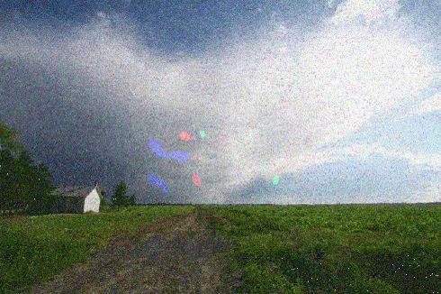

Visual Snow Syndrome
Introduction
Visual Snow Syndrome is a set of things which can affect your vision, even when you have good eyesight. Most of the effects of visual snow can be seen even when you have your eyes closed.
The main characteristic of Visual Snow is having persistently grainy vision (the "snow"), like static on a TV screen, or the ISO noise you see in digital camera photos taken in dimly-lit places.

Other features of VSS include strong after-images, being very aware of floaters even when not looking at a bright sky, and a sensitivity to bright lights. Some people also experience having tinnitus, despite not having any physical damage to their hearing.
Some effects are shared with the visual aura of migraine, but visual snow is distinct, usually constant, and not usually associated with headache.
Everyone can experience some or all of the effects of visual snow from time to time, but many people don't notice them, or aren't bothered by them.
When visual snow is persistent enough or intense enough to affect your day-to-day life, that's when we refer to it as Visual Snow Syndrome, or VSS for short.
Some people may have experienced visual snow their entire life and see it as normal, whilst for others it can appear as a new condition.
An estimated 2-3% of the world's population are thought to experience Visual Snow Syndrome to some degree, with two thirds reporting that it affects their night vision.